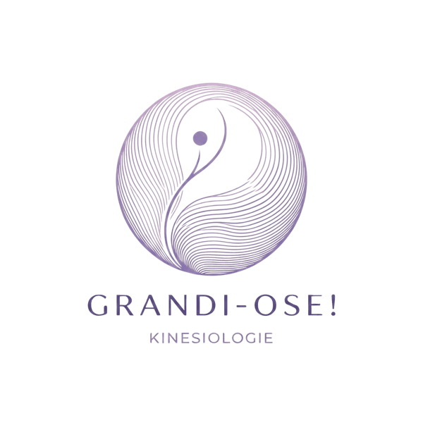

On ne mesure ce qu'on portait qu'une fois le souffle retrouvé.

"Et si ce blocage était en fait… le début du chemin ?"
Femme, épouse, maman, sœur, amie… et avant tout curieuse de l'humain et de ses infinies capacités d'évolution.
"Grandir n'a pas d'âge. Oser être soi demande parfois du courage."
Mon chemin vers la kinésiologie n'a rien d'une ligne droite. Comme beaucoup de personnes, je n'ai pas toujours avancé sur un chemin tranquille : des troubles du comportement alimentaire à l'adolescence, des fausses couches plus tard, qui ont marqué mon parcours de femme. Sur le moment, ces épreuves sont douloureuses. Avec le recul, elles deviennent aussi des invitations à mieux comprendre qui l'on est réellement.
Avant la kinésiologie, j'ai passé treize ans à accompagner des personnes en situation de handicap mental dans le cadre de vacances adaptées, entre Montpellier et Perpignan. Ces années ont profondément marqué ma façon de voir le monde : l'écoute véritable, l'adaptation, le respect du rythme de chacun, l'accueil de chaque personne telle qu'elle est.
Je suis quelqu'un de profondément humain, sensible aux autres et à ce qui se joue derrière les apparences. J'aime les échanges vrais, les rires, les émotions, les histoires de vie et tout ce qui fait que nous sommes chacun différents.
L'amour occupe aussi une place importante dans ma façon de voir la vie : l'amour des autres, de ce qui nous relie, mais aussi celui que l'on apprend parfois à se porter à soi-même.
Je crois qu'il n'est pas nécessaire d'avoir toutes les réponses pour avancer. Parfois, être véritablement écouté, regardé et accueilli dans ce que l'on vit permet déjà de remettre un peu de mouvement là où quelque chose semblait figé.
Chaque être humain possède en lui des ressources immenses, même lorsqu'il les a momentanément oubliées.
Chaque être humain possède en lui des ressources immenses, même lorsqu'il les a momentanément oubliées.
Mon chemin m'a amenée à explorer différentes approches : les livres, précieux compagnons de route ; les constellations familiales, qui m'ont permis de regarder mon histoire avec davantage de douceur ; la kinésiologie, qui a ouvert des portes que je ne soupçonnais pas.
Et puis il y a eu le silence — une rencontre inattendue pour celle qui aime parler, échanger, rire et partager. J'y ai découvert un espace incroyable d'écoute, de recul et de reconnexion : la possibilité d'entendre ce qui se passe réellement à l'intérieur de soi.
Aujourd'hui, c'est à mon tour de me former avec sérieux et passion à l'école Ekivie à Perpignan, afin d'accompagner les personnes qui souhaitent avancer vers davantage de compréhension, d'équilibre et de sérénité.
Je ne crois pas aux solutions miracles. Je crois à la puissance de l'écoute, à l'importance d'être accueilli sans jugement, aux petits pas qui, mis bout à bout, créent de grands changements.
En séance, je vous invite à être vous, simplement, avec vos doutes, vos émotions, vos contradictions et vos forces aussi.
Je ne suis pas là pour avoir les réponses à votre place, mais pour vous accompagner avec écoute, respect et sincérité, et vous aider à remettre du mouvement là où quelque chose semble bloqué..
Parce que grandir n'a pas d'âge. Parce qu'oser être soi demande parfois du courage. Parce que derrière nos peurs, nos blocages ou nos doutes se cache souvent une version de nous-même qui ne demande qu'à s'exprimer.
Grandi-ose !, c'est une invitation : l'invitation à te rencontrer, à te découvrir autrement et à oser avancer vers toi-même.
« La peur est l'énergie qui contracte, ferme, attire, court et cache.
L'amour est l'énergie qui s'étend, s'ouvre, se déplace, reste et révèle. »
Neale Donald Walsch, Conversations avec Dieu
La kinésiologie s'appuie sur le test musculaire pour identifier les tensions, les blocages émotionnels ou physiques, et accompagner le corps à retrouver son propre équilibre.
En séance, on prend le temps d'identifier ensemble ce qui a besoin d'être travaillé, puis on utilise le test musculaire pour dialoguer avec le corps et l'accompagner vers un mieux-être durable. Pas besoin de "croire" à quoi que ce soit : le corps parle, on l'écoute.
La kinésiologie s'adresse à toutes celles et ceux qui ressentent le besoin de souffler, de se recentrer ou de mieux comprendre ce qu'ils traversent.
Pour relâcher la pression du quotidien, retrouver du sommeil et de l'énergie.
Deuil, séparation, reconversion, parentalité : traverser les transitions plus sereinement.
Douleurs récurrentes, fatigue persistante : écouter ce que le corps essaie de dire.
Quelques minutes pour poser ce qui vous amène, sans pression ni jugement.
Le test musculaire permet d'identifier ce qui a besoin d'être rééquilibré.
Des techniques douces accompagnent le corps vers un mieux-être qui s'installe.
Sur mon chemin, j'ai eu la chance de rencontrer des personnes d'une grande richesse, qui ont partagé avec moi leurs lectures, leurs découvertes, leurs expériences, mais aussi parfois les noms de professionnels qui avaient compté pour elles.
Certaines de ces rencontres sont restées avec moi. Certains livres m'ont questionnée, bousculée, éclairée ou simplement accompagnée à un moment où j'en avais besoin.
J'ai eu envie de réunir ici quelques-unes de ces personnes et de ces références qui ont, chacune à leur manière, participé à mon chemin et m'ont aidée à grandir.
Vous y trouverez donc des livres, des auteurs, des personnes que j'apprécie, mais aussi des découvertes faites au fil du temps. Ce ne sont pas des vérités à suivre, ni des recommandations universelles : simplement des choses qui ont résonné en moi et que j'ai envie de partager à mon tour.
Et surtout, derrière plusieurs de ces références, il y a une personne à remercier.
Merci à Nerea, mon amie espagnole, pour m'avoir fait découvrir Conversations avec Dieu de Neale Donald Walsch.
Merci à ma tante Christelle, pour La clé de votre énergie de Natacha Calestrémé.
Merci à Justine, pour Le grand dictionnaire des malaises et des maladies de Jacques Martel et Lucie Bernier.
Merci à Marie, pour Des étoiles vers la Terre de Mireille Dürig-Jaquier.
Merci à Houda, pour Les Lettres du Christ.
Merci à Zoha, pour Les neuf marches d'Anne et Daniel Meurois-Givaudan.
J'ai aussi découvert sur les réseaux sociaux Signes - Le langage secret de l'univers, de Laura Lynne Jackson, qui a naturellement trouvé sa place parmi mes ressources.
Et merci à toutes les personnes croisées sur mon chemin, parfois le temps d'une conversation, d'une recommandation ou d'une simple découverte, qui ont contribué, sans forcément le savoir, à faire grandir quelque chose en moi.
Cette page évoluera au fil de mes découvertes. Parce que le chemin continue, et qu'il y aura certainement encore beaucoup de choses à lire, à découvrir, à questionner… et à partager.